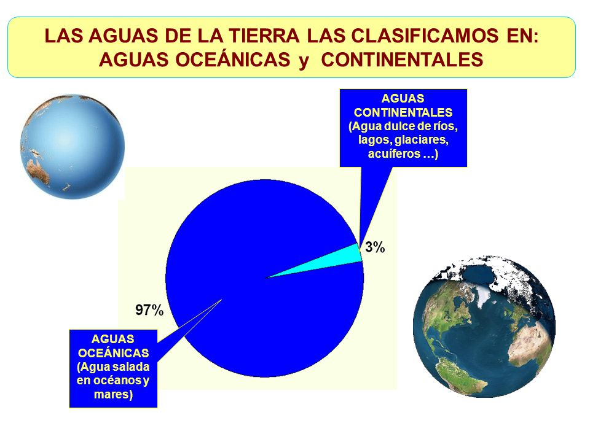

Aunque se llame Tierra, si lo vemos desde el espacio, nuestro planeta parece más bien de agua, ¿no lo crees? ¿Alguna vez te has detenido a pensar exactamente qué proporción del planeta es tierra, y qué proporción es agua? La respuesta podría ser muy sencilla, pero no lo es tanto. Investiguemos un poco y tratemos de responder esta pregunta.

Al analizar la superficie del planeta, sencillamente se puede estimar que un 71 % está cubierto de agua, y el restante 29 % es masa continental >. Ahora bien, la superficie no equivale a la masa, por lo tanto no podemos afirmar que la Tierra sea un 71 % de agua y el resto de tierra. Debemos ser un poco más específicos.
De la cantidad total, el 96,5 % es agua salada y se distribuye entre los océanos, mientras que el restante 3,5 % es agua dulce que se encuentra a nivel superficial en forma de ríos y arroyos, a nivel subterráneo en forma de acuíferos naturales, y en forma de hielo en los polos y cimas de montañas.
¿Qué pasaría si el agua del mundo se acabara?
La falta de agua ya está comenzando a notarse en sitios en donde antes abundaba, y ya no nos referimos a los desiertos o zonas secas. Una de cada seis personas en el mundo no tiene acceso a agua limpia y sana para tomar. A todo esto hay que agregar que la población sigue creciendo, pero no lo hacen las reservas de agua.
El cambio climático también es un factor importante en este proceso, pero sobre todo lo es el avance económico. Esto implica más fábricas e industrias utilizando agua para mantenerse trabajando, y a medida que la economía crece, la población requiere mejores condiciones en sus hogares. China e India por ejemplo están creciendo a ritmo acelerado, pero al mismo tiempo tienen una población mundial que supera a la de los demás países.
En algunos países ya se están realizando tratados con otras naciones para el suministro del agua, y es algo fundamental porque las fuentes de agua no tienen fronteras. Otra manera de cuidar el agua a futuro es controlar la irrigación en las plantaciones. La agricultura utiliza un 70% de los suministros de agua, pero 42% se pierde debido al mal uso.